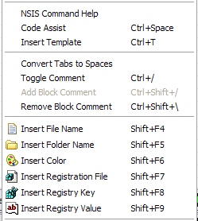
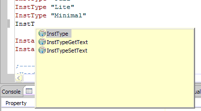
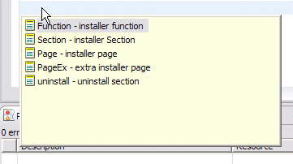
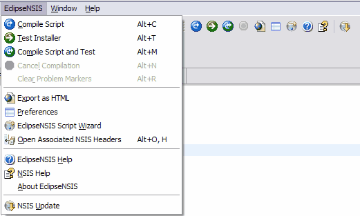
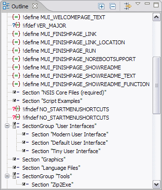
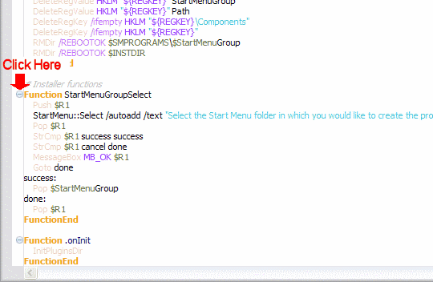
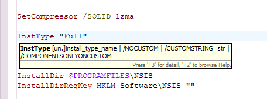
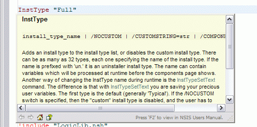
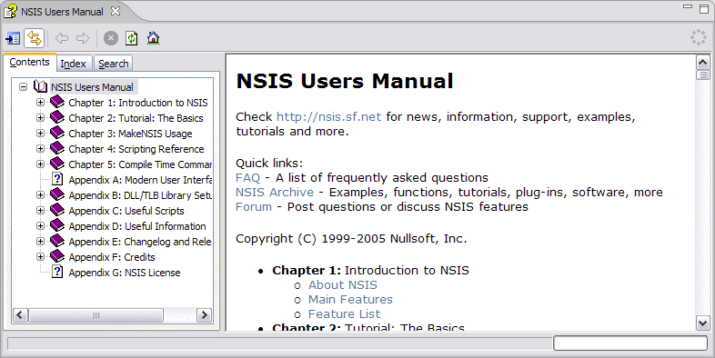

Editing NSIS Scripts
EclipseNSIS comes with an editor for working with NSIS scripts. By default, the editor is registered to work with files having the .nsi and .nsh extensions. The editor offers the following features:
- Editing Commands
- Vertical and Overview Rulers
- Menu and Toolbar
- Code Outline
- Code Folding
- Task Tag Detection
- Integrated Help
Editing Commands
The editor includes the standard commands available with the Eclipse Workbench Text editor, including:
The EclipseNSIS editor also offers additional editing commands. These can be accessed either from the Edit menuitem in the main menu bar or by right-clicking in the editor to display the editor popup menu. Most commands also provide keyboard shortcuts. Click on the image below for help on a particular command.

- Code Assist
- Provides a scrollable list of available code completions when
activated from a valid line of code in the EclipseNSIS editor.
Completions include both NSIS keywords as well as code templates. ← Back
Shortcut: Ctrl+Space
- Insert Template
- Provides a scrollable list of available code templates when activated
from a valid line of code in the EclipseNSIS editor. When a template is
inserted, the user is prompted to complete any unresolved template
variables. See Template Preferences
for more information about code templates. ← Back
Shortcut: Ctrl+T
- Convert Tabs to Spaces
- Replaces tab characters with spaces in the script. If text is selected, then only the selected text is operated on, otherwise all text is operated on. To set the width of a tab character in terms of spaces see the Editor Preferences page. ← Back
- Toggle Comment
- Uncomments the currently selected lines of code if all of them are
commented and comments them otherwise. ← Back
Shortcut: Ctrl+/
- Block Comment
- A text selection in the EclipseNSIS editor can be quickly turned into
a block comment using the Add Block Comment. Conversely, the Remove
Block Comment command removes the block comment enclosing the cursor
position. ← Back
Shortcuts: Ctrl+Shift+/ (Add Block Comment) and Ctrl+Shift+\ (Remove Block Comment)
- Insert File Name
- The Insert File Name command pops up a file selection dialog box. If
a file is selected in this dialog box, the file's name is inserted in
the code. This is a quick way to add File instructions
to the NSIS script. ← Back
Shortcut: Shift+F4
- Insert Folder Name
- The Insert Folder Name command pops up a folder selection dialog box.
If a folder is selected in this dialog box, the folder's name is
inserted in the code. This is a quick way to add File
instructions for folders to the NSIS script. ← Back
Shortcut: Shift+F5
- Insert Color
- The Insert Color command pops up a color selection dialog box. If a
color is selected in this dialog box, the color's RGB hex value is
inserted in the code. This is a quick way to add NSIS commands which
accept a color value, e.g. BGGradient, to the NSIS
script. ← Back
Shortcut: Shift+F6
Vertical and Overview Rulers
The vertical ruler is to the left of the editing area in the EclipseNSIS
editor and is used to show text ranges and line-based annotations (e.g.,
problems, bookmarks, tasks, etc.) adjacent to their text line.
The overview ruler is on the right hand side of the editing area, and is used
to show annotations concerning the entire script. These annotations are
shown relative to their position in the script and do not move as the user
scrolls the script source. There usually is a corresponding annotation on
the vertical ruler when that portion of the script is visible.
Menu and Toolbar
The EclipseNSIS editor includes a menu on the main menubar as well as a toolbar which provide quick access to some EclipseNSIS-related commands. Click on the image below for help on a particular command.

- Compile Script
- Compiles the NSIS script currently being edited. This command is
disabled when a script is being compiled, even if it is not the current
script. ← Back
Shortcut: Alt+C
- Test Installer
- Runs the installer generated when the NSIS script currently being
edited was compiled. This command is only enabled if a valid installer exists. See the Compiling and Testing section for more details.. This command is
disabled when a script is being compiled, even if it is not the current
script. ← Back
Shortcut: Alt+T
- Compile Script and Test
- Compiles the NSIS script currently being edited and runs the
installer generated if there were no errors. This command is disabled
when a script is being compiled, even if it is not the current script.
← Back
Shortcut: Alt+M
- Cancels Compilation
- Cancels NSIS script compilation. This command is enabled only when a
script is being compiled, even if it is not the current script. ← Back
Shortcut: Alt+N
- Preferences
- Opens the Eclipse Workbench Preference Dialog, with the EclipseNSIS item pre-selected. ← Back
- EclipseNSIS Script Wizard
- Opens the EclipseNSIS Script Wizard dialog, which is a GUI for generating NSIS scripts. See the Script Wizard section for more details. ← Back
- EclipseNSIS Help
- Opens the Eclipse Platform Help browser, with the EclipseNSIS section displayed. ← Back
- NSIS Help
- Displays NSIS help. This uses either the Eclipse Platform help browser or the EclipseNSIS integrated help browser, depending upon the preference setting. ← Back
- About EclipseNSIS
- Opens the EclipseNSIS About dialog. ← Back
Code Outline
EclipseNSIS includes a code outline view for the currently-active NSIS script in the EclipseNSIS editor. The outline view lists structural elements in the NSIS script. The structural elements currently supported by the outline view are:
- !define
- !ifdef
- !ifndef
- !ifmacrodef
- !ifnmacrodef
- !macro
- Function
- Section
- SubSection/SectionGroup
- Page
- PageEx

Code Folding
The EclipseNSIS editor supports folding of certain types of code regions. The code regions supported are any NSIS keywords which are multi-line in nature, e.g., Function, Section, !macro, etc. Multi-line comments are also supported for code folding. Click on the image below for a preview of how folding works in the EclipseNSIS editor.

Task Tag Detection
When a NSIS script is saved in the EclipseNSIS editor, it is automatically scanned for any task tags in commented text. Whereever a task tag is encountered, the EclipseNSIS editor automatically generates an Eclipse Workbench task. These tasks are shown in the editor using markers in the vertical and overview rulers, and can also be viewed in the Eclipse Workbench Tasks view. The task tags can be configured using the Task Tags preference page.
Integrated Help
EclipseNSIS also provides integrated help while working with NSIS scripts. This is available in two forms:
- Quick Help
When the mouse hovers over an NSIS keyword, help for that keyword is displayed for in an information popup.

Pressing the F2 key displays detailed help, and pressing the F3 key makes the hover help "sticky":

- Detailed Help
EclipseNSIS provides access to detailed NSIS help documentation. This may be accessed in two ways:
- Eclipse Platform help browser: Navigate to EclipseNSIS User Guide→NSIS Users Manual.
- EclipseNSIS integrated help browser: Open the Eclipse Workbench Show View dialog and navigate to EclipseNSIS→NSIS Users Manual.

Detailed help on NSIS keywords can be directly accessed by clicking on a keyword and pressing the F2 key or by pressing the F2 key in either the hover help or sticky help popups. The preferred method for directly accessing detailed help can be configured in the EclipseNSIS preferences page. Once this has been done, pressing the F2 key or selecting the NSIS Help menu or toolbar item will display detailed help in the chosen browser- i.e., either the Eclipse Workbench help or the EclipseNSIS integrated browser.
Previous | Contents | Next
Copyright © 2004, 2005 Sunil Kamath (IcemanK).